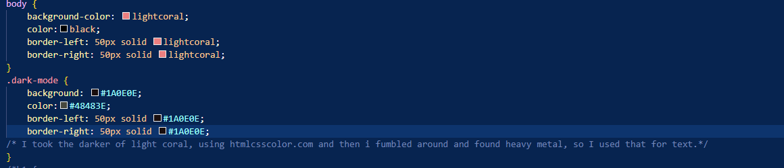
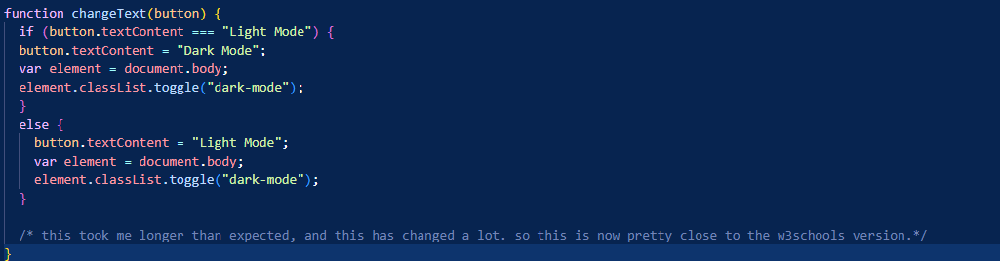

Hello there!
I am Uriel Dolgin and I am a student at Northeastern Illinois University studying computer science!
Hopefully something here is of interest and you enjoy your stay!
Like many others, I enjoy video games such as minecraft, World of Warcraft, and Pokemon! Outside of gaming, as a Student I have many academic goals. My main goal is to become extremely competent. Currently, I am still just a student and have much to learn, however playing games really show what developers can really do. Whether its minecraft which in large part succeeded due to the developers of mods and additions to the game which added complexity and creativity. Being someone who can contribute to the world in a way such as developing whether its being able to help shape a companies online prescence or create tools which help users accomplish complex tasks is something I plan on becoming great at.
Many of my projects, I no longer have access to, so instead I will reference different things from this to use as examples.
Here is the css to my dark mode/light mode switch.

The css in this instance, outlines what each mode looks like. So in light mode, its lightcoral and darkmode its the hexcode for a much darker almost black color
And Here is the Javascript for the button,

This button does double duty, in changing the text and then setting dark or light mode. While I dont use many comments, here are some examples of me explaining the purpose and such of the color or whats happening to cause this to work as it does. So here, if you want to understand the logic behind the light/dark mode swap you can look at the w3schools for their javascript relating to lightmode darkmode.
Hey there, my skills are many and varied. They include but are not limited to:
Communication with Fellow employees,
Skill2,
Skill3
If you would like to contact me, you can do so through the following methods:
My Email
My Github
My Phone number
My resume is a WIP. Here is a link.